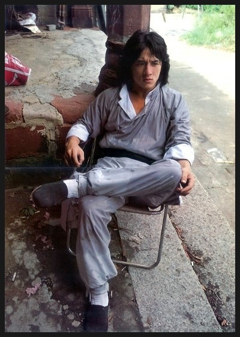

Everybody Needs a Break Sometimes
Inspired by this photograph

He burns with thought,
a venerable stone building
frames him.
He’s paid to play pretend
but the cigarette butts & unkempt street
are real now.
His fight scene
had gone wrong.
He was to dodge the left hook, sweep the leg.
But the enemy didn’t jump the sweep,
& down he went.
Face met flowery tea cup,
cutting a thick, deep gash,
a spray of blood.
His enemy knew what should have happened.
But he did it,
he made leg crash into leg.
The closed eyes, broken face
won’t leave him.
"Jackie, you’re on."
The Book of the Hacker (Desire)
Live as if you were digital.
Inspired by The Book of the Dead Man by Marvin Bell
1. About the Hacker and Desire
The hacker does not know where he finds himself.
On one of his morning exploits, he sees writing in a foreign tongue that
reminds him of Russian, but sharper.
The hacker finds himself in The Ukraine, he stares blankly at his green on
black terminal; his window into that much larger than him.
The hacker stands in a river of information.
He finds an open webcam and sees a newborn baby, eyes twinkling in the light of the LCD.
The hacker now sits at the top of a financial empire in the heart of Wall Street.
Now the hacker reads an email about a graphic car crash, picture included.
He is briefly in the memory banks of the people he intrudes on.
The hacker wonders how long he will remember his acquaintances.
An annoying accident finds the hacker at his own server.
2. More About the Hacker and Desire
The hacker has no family, he doesn't need one.
He abuses the follies of man and machine.
The hacker is excited over the idea that his curiosity may be boundless.
He dons a hat of healthy grey.
For the hacker, a simple command can ripple out into the physical world.
To the hacker, the internet is a sticky copper spiderweb.
To the hacker, data is the oil, the blood, the gold.
To the hacker, the transistor is the basic unit of life.
The hacker yearns for dense cityscapes and lively coffee shops.
The hacker thinks of the shoulders he stands on: Alan Turing, Dennis Ritchie, Ada Lovelace, GeoHot, Solo, C0mrade, TeaMp0isoN and wants others on his.
The hacker is proud of his shrouded work.
The hacker has seen technologies come and go just as he has seen people, policies, regimes and parties come and go.
Chinese Fall
Inspired by Tomas Tranströmer
The rose with a single thorn,
intentionally untrimmed,
bites the victim.
Their wince is candy.
Shining Chinese gorge, between
Wu Shan and Ba Dong.
In the distance,
a roiling thunderstorm
narrows its eyes.
Organ, with endlessly complex pipes,
smooth ivory keys.
Hides itself from the listener,
shows only false, hollow exterior.
Blares loud, cacophonous Messiaen chords.
Burs in my brother's shoes,
hours of incessant itching
will show him.
How dare he
take my Pokemon cards.
This Poem Is Not About Cara
The whore cries,
“I'm your little bitch”
in that whiny, grating,
“I'm about to fake
an orgasm” squeal I've
heard a hundred times
before, but never from
this side of the
bedroom door.
Fuck...
Fucking Fucking Fuckity Fuck!
Blinded by tears and screaming
along at 60 miles an hour,
I'm going home to my bed.
For a month, the world had ended.
It felt like my pores
oozed black slime.
I finally let myself go out
to a bar, and mope at
anyone that would listen.
“Hey buddy, that sucks.
Let me buy you a beer.”
We talk about our ex girlfriends
and he knows the feeling all too well.
The night goes on, and
I've made a friend.
"Friday I'm in Love"
is that song from high school
I never want to hear again and
Anastasia is the girl who gave it to me.
Her parents fled cold, careless
Putin when she was 8.
Our love came quickly.
At the choir camp bonfire
we whispered our first
sweet “I love you”s under
the burning harvest moon.
Six months later, after we broke up
and got back together
she said, “We have fun, right?”
to cut the long silence of
our downtown stroll.
“No.” I thought,
“I think we do” I said.
One year later, as we sobbed
knowing it was over,
light rain fell from the
coolly blackened sky,
washing away our love.
I drove her home.
One weekend on a choir trip,
I met Cara.
Our love came quicker.
The night we met was spent
learning about each other under
the pin pricks of light in the
chillingly clear mountain night sky.
We ritualized Fridays,
giving them entirely to one another,
our weekly spikes of love.
Six months later, I found
Cara in the corner of my
little blue bedroom,
rocking back and forth,
trying desperately to rid her mind
of depression and anxiety.
I frowned and held her.
One year later, late at night
Cara and I wandered down to a dock.
We talked about beauty and
how far we'd come.
As rain began to fall,
we ripped each other's clothes off.
Mother
Inspired by "Mother" by Paula Meehan
mother florist
maternal mother
you raised me right
you let me go
mother nuturer
bearer of my blankie “May”
kitty cat caretaker
threadmatrix seamstress
mother sharer
of book and bowl
teaching me to learn
pouring morning cereal
mother home and cradle
your two eyes beaming
light and whimsy
when you made me
mother you made family
you and your lion companion
you and your dens
you and your meditation
mother your textiles
your candles your rugs
your grouting your paint scraping
your tomatoes your lettuce
mother raising a house of plants
you grow from soil
through tireless care
and much love
mother your gardens
your greens your veggies
with your thistles
mother cat I'm you're kitten
mother naturalist
home maker
traveler and tranquil
in the summer sun
mother you call
I hear your venom
and your disapproval
and I scream
The Most Feelings I've Ever Felt Walking to my 8 AM Poetry Class with Jordan Smith on a Wednesday Morning
Moonlit morning walk into class
Groggy students drift to 8 Ams
Venerable oak, rustling overhead
Just then
An acorn falls
Strikes me square on the head
Fucking squirrels
What when the flower children cry?
2025-12-24
Once peace sign bearing children put flowers in guns
Then we put them in our hair
And we danced in the eternal summer sun
And we wept as one breath.
Bitter baker bemoans
2025-12-07
Butter batter bottomed banana blueberry biscotti badly burnt.
Your higher power is your mom
2025-12-04
A Julian Davis Jocque a day
Will keep you sober
you fucking moron
Two Toned Teacher
2025-08-28
From flea bath wails
To careful wall bumps
He made it
Long tail for tugging
Soft body for plastic bag rides
Perfect pillow, napping to his purrs
Stairway thunder for evening attic time
The smell of stress oozing after a trip to the garage
Memories of Hazel rearing sister brother Daisy
Never stretching a claw to play
Always in his hidey holes
His patience in scooped up loving arms
knowing it will end soon
Now once and for all
Rest in peace, Moxie
Beauty
2025-08-15
A blade wielded well before
Its quickness is known
Trying to find a rhyme
2025-08-03
But's not the right time
To be smoking the juice sublime
Fine, I'll find you flipping candy on the sidewalk
Street stalker hawker
church parking lot hot box
2025-04-20
Four hundred and twenty reasons to forget
Decayed Jesus, 6th risen, flag wrapped, boots black, white, and red
Two hellos remind my eyes they still work
And Now
They won’t send me anywhere, demands DEI hire
I’m a citizen, you know, white
for now,
alternate facts smack of faggot rising
Mars killed logos
Of course he’s alive
Box a’int hot
The N-word is dead!
2024-06-28
Long live the N slur!
Carlin and Louie are hacks
Linguistics is neither controllable nor moral.
A mother's love
2024-05-11
Is weed and tunes
And fresh high elevation donuts
Cider, in fact.
Then it hit me
2024-04-16
"I don't give a shit about my dick"
An awkward pause
"That's why I act like I hang major dong"
An enlightening pause
"Plus I look good in a dress"
Time to enrobe
I don't like looking at what my eyes see
2024-02-09
I don't like looking at what my eyes see
I don't like seeing what my eyes look at
Requiem for Hendo
2024-01-19
Thin wisps blow the man down
Surfer boy waves crash reminding
You're not the only one
Or even a good one
Does hen do?
Surely not.
Jealosin on the melanin
2023-12-18
Jealosin on the melanin
Yellowin for some pink
White and blue
Neutered lioness death is wind in the garden
2023-11-04
Vascular cub wains
Small man pumps
While eldest enlightens
May you never
2023-10-28
May you never ever
Let your wretched corpse into my secular space
My packs
2023-10-21
Overflow with magic
Evil killing succubi
Taunting terrible foes
Tiptoe towards alarm
Finally
2023-09-09
A break
From my
Drug break
Fasting
Is good
When fast
Means fast
Asleep happy
Soft warm
Clean
Little boys
Art and Chet
2023-08-21
"How are they alive???" Squacks the squan
Art and Chet just keep on blastin'
Red town blue state
2023-08-21
How are you?
I am good.
Tonight's a big night for Trump!
Hugs and kisses,
Love,
Grandma
!(My Preferred Pronouns)
2023-08-17
Fuck men
The being of pure squats slivered out she her tongue to slash Miles Jules and Claire
This he him is the he they for me she's so hot
That Time I Was Smarter Than My Coworker
2023-08-17
She was definitely black and definitely at least twice or maybe thrice my age
We were packing boxes at Zingermann's mail order warehouse
Her much more deftly than I
I was a floater, helping what stations needed help
"That Bill Gates is a good man, faithful to his wife"
"Oh I don't like him because of like Netscape, he really hurt computing"
And his wife divorced him over his relationship with known pedophile and human trafficker Jeffrey Epstein
But thanks for supporting the military industrial complex so we'll.
Notably, written April 20th 2023
Sprinting Towards Death Is Not A Metaphor
2023-08-15
To professional my sister
Is children flowing down plastic slides
Round Mary goes, Chester falls
David find purchase in the fence
Finally, escape
From this 120 foot tall tower
I take a drag
Taking a drag as I slide down the merry go round of life
120 feet in the air is high enough for my sister most days, but she, like cats, birds, and Killians, like to be tall
Rico goes sprinting towards certain death
Sure hope someone watered those squash
Fuck men
2023-08-14
It's okay to hate men
It's not okay to hate me
I am men
A country that's divided
2023-08-12
I just learned a dirty word
You wanna hear it?
Immigrants
Jews
Capital
Apologize the filth
Now for some more dirty words
Fagari
Puta madres
Spatizva
Xie xie
Finally, some clean words
Communism
Secession
I ring this death bell
2023-08-08
For I have nothing left to do
Kelly nelled nellilily storeward
She met Maya
Maya met Maeve
Maeva met her match in a freestyle bingo tournament
We Don't Do Punishment
2023-07-30
Anymore
We’re gentle parents
Gentle adults
Soft, gentle, silky, chiffon children
Toddling through life
25 minutes on 5 off
4 times
Then 15!
Writes a research paper in a night
Fat fucking blunts
Survive blue hour twilight nights
Working so hard according to the guy they fired
Oh and my boss who isn’t my boss he’d really rather I stopped calling him my boss-man
But her punishment isn’t the same
It’s special!
It’s kind, gentle, never raises its voice, never turns to rage, and most of all
Definitely
Never
Hit
Me
Darvo sends his regards, regard
This One Weird Trick Will Get You A Job Making $175,000 A Year
2023-07-30
You know that thing you don’t wanna do?
Well, first off, bad news.
But do you want the good news first?
Great.
Please come on down to door number 3 and we’ll see what you’ve got!
Iiiiiittttt’ssssss
$8000 a check
After tax
A house
<not that>
Aaaannnnndddddd most importantly we have here hidden in this little compartment
*audience gasp*
Ohhhhhhh I’m so sorry but the bad news has to come first, what can I say, 🎵showww-bizzz🎵
Okay so it’s really easy alright so first
Be born
Euuuhhhhh Cheeeecccckkkkkkk number ooonnnneeeeeeeee!!!!
Second, you know that thing you don’t wanna do?
Me either, let’s get drunk
Let’s get high
Let’s get fucked up beyond all recognition
It’s how Matt runs a $1.5BB business! Or wait like 1.2 now or something, who cares
It’s got a B-B-B-B-B-B-B B for BILLION!
Justin Timerblake said I’m cool now, right dad?
Not that that helps on a first date when all you know how to do
Is what you’ve been told
What you’ve been programmed
The machine you’ve built against your will is going to have to
You know that thing you don’t wanna do?
Yeah, definitely don’t do that.
Julian, Julien, Jules, and Julez walk into a bar
2023-07-30
FUCK
What?
That hurt?
What?
The bar
How can a bar hurt you?
The booze doesn’t help
Yeah, neither does the smoke
Or the reminders or the phantoms or the memories or the past ex-something carving her way into every corner of the psyche that’s too broken for her or anyone
Just Breath, it’s what Treebeard would do
Gandalf would breath something else
Gandalf’s not real
Neither is she
Neither are we
Walk into a bar
It hurts
Again
We walk out of a bar
It Hurts
More this time
I think I’m good, actually
Yeah, I’m not, but you are, and that’s good
Feeding baby bunnies may make you think you are who you are but you aren’t that person
You’re that other person the one you saw at 10 Forward
The one that wanted so badly for
A slowly creeping vine to find her way back into your short longer life
The Ivy Leagues reminding you that maybe a 3.6 isn’t something to be proud of
Things could have been different
You just have to not take that first breath
And all the rest are easy
It's Nice To Share
2023-07-29
I only carve Rushmores
Out of horse girls lost in the desert
Take my time take my peace
Find my way to stone slabs severed
Happy go lucky LRU caches
Dance acyclically to greedy optima
Know what’s cheap and who knows who
Ground effect shine stall wins Nürburgring
Last time I was here I remember the smell of freshly cut grass, and the soft white noise of flaxen wheat shuffling in the apocalypse
Fire nose plumes
The Nicotine The THC The CBD The Weed The Ganj The Devil’s Lettuce The Burning Plant Matter Scorching
Her perfume, medicinal scotch glass
No cigar can match the wine cheese effluence
Of who I was
When I was good at being good at being good at being who I was when I was who I was when I was good at being good at who I was
Great Men of the past that have nothing to do with me
Feynman Oppenheimer Turing and all the rest
Church and Bohr
Ritchie and Kernighan
Barbie and Ken
Once gave a lecture at my school!
You know, Princeton?
Oh I’ve heard of that one, yeah.
It’s nice to share a desk
Julien me manque
2023-07-24
Je crois que je peut parle francaise
Mais je be peut pas
Je be sais pas une brain francophone
J'suis une Rican
Une merde du merde du fromage Rican
Qui ne pe parle pas francaise
Avec too
Avec moi
Ave ma mere ou ma pere ou ma grandmere out Mon granpere
J'suis pas une dictionary
J'suis vraiment lost
Wo hai xiang zhong wen
2023-07-24
Wo zhi dao
Bai ren mei shuo pu tong hua
Sui yo wo xian zai zhe me shuo ne?
Yin wei
Da jia zhi dao
Wo bu shi
Wo bu shi zhong guo mei guo fa guo ren
Wo shi wo
Wo bu xi huan wo de mama baba mamamama bababa he wo yin wei wo xian zai bu tai hao le
Yin wei
Wo bu zhi dao zen me zuo
Zuo gong kuo? Bu shi
Zuo sui bian? Bu neng
Zuo? Bu zhi dao
Ke shi
Xian zai
Ke yi hé yi dian
Dear Michigan
2023-06-19
You held me for 18 years and I abandoned you
To Schenectady, NY, a city most can’t even spell
Much less point to on a map
Or visit
I was wed in Northampton, MA
Michigan didn’t come to my aide then
I was divorce in South Hadley, MA
Now Michigan wants me back
And I know what I want.
I don’t want the responsibility of end of life care for you
I don’t want the responsibility of your house
I don’t want your life
I don’t want your Michigan
I want my
I want my place
I want my home to be my home and not your home and not her home or their home or anyone’s home but my home until my home can be a home for anyone else but for now
My home is my home.
My home is a building.
It’s made a wood and plaster.
It’s in South Hadley, MA, and it is mine.
I point to it and I say
“I want it all to myself”
Until I am ready to share,
And I am not ready to share yet.
I need to take.
I need to eat.
I need to satiate my hungers
Now
And forever.
Dear dad
2023-06-07
You worked too much and I do resent you for it. Now that I’m on the flip-side I know that you were just trying to be better than your dad, who didn’t work hard, had to rely on Grandma, and was an asshole who gave you specific directions to let you know you’re a fuck up and nothing will ever work out for you.
I didn’t luck out when you took that typing course, I lucked out when Someone came to the new world and left the old one behind. I like this new world, I don’t want to be Czech or a French Canadian fur trapper. I like being a Jocque.
Mom,
You worked too much on all the wrong things. You never took the time or space for yourself because you let your kids consume you.
We don’t want you, and you know it now, and it sucks because I do like you, I just don’t like your parenting. I don’t think we’d be friends outside of the context of a mother daughter relationship.
My mom hit me
2023-06-07
And we hit back
Honestly it was a pretty cute little moment
Me, her, Harper, and Dad
In a parking garage
Dressed well (but not too well)
Wearing our cats' hair until
Whap
Meets whap whap laugh
She learned something that day
I don't come from here
2023-06-07
Geographically, socioeconomically, sexually, psychically
I do come from everyone
I come from everyone everywhere all at once
The past is who I was
I is a word that exists in the English language
He rides north
2023-06-02
Because the river runs south
The Horror of Your Skin
2023-05-30
Haunts these echoy halls
Drug of choice
2023-05-29
A great way to quit THC is to pick up nicotine
A great way to quit Nicotine is to reach for the bottle
A great way to not reach for the bottle is to reach for the lover
A great way to not reach for the lover is hate
I wish I wasn't
2023-05-28
Your out
I wish I wasn't the one
Who turned your B.A.
Into an M.R.S.
Mother always knew best though
And she's been so supportive!
I'm sure we've all changed a lot.
You're lazy
2023-05-28
I hate to admit it, but it's true.
While I was working full time
I was also splitting the chores
While I was working full time
You were taking weekend romantic getaways with your girlfriend
While I was working full time
You were a cat poet
Sitting in sunbeams
Taking important naps
Inventing any reality that lead away from the truth that
You are lazy
And mean
And abusive.
I don't want you.
I don't need you.
I need you to leave.
Right.
Now.
You're weak, too
2023-05-28
Not because you have fibromyalgia (you don't)
Not because you have CFS (you don't)
Not because you're morbidly obese (you are)
Not because you can't get up before 11 (that's depression)
Because you expect
A nice in shining armor
To save you
Because
You don't listen to the doctor
When he says
Hey maybe if you lost a couple
No
He's an asshole and a bad doctor
He may know sleep apnea but he doesn't know your sleep apnea
Your sleep apnea is special
You have special sleep apnea
That's not mild to moderate it's mild
It's not the problem
You wouldn't be happier if you slept better
You wouldn't be healthy if you listened to the doctors
You wouldn't know who you are if you listened to yourself
Because it's all an illusion
It's all fake
None of it's real
You are the princess
You are the Rapunzel
And I am done being your prince charming.
I am done being your little bo peep.
I am done living in a world you construct where the only rule is
Cara is right
And you are wrong
Just like your mom.
I'm weak, too
2023-05-28
Not because I can't hold down a full time job (I can)
Not because I struggle with depression (I do)
Not because your rape hurt (it did, so badly)
Not because I need help (I do)
Not because I need care (I do)
Because I can't suck it up, buttercup
I can't just do it
I can't be disciplined anymore
I miss it
The whip
The shouts the hate the anger
Most inside
Except when you were kind enough to remind me
Yes, honey
Yes, I know
I know I'm weak
I know I'm not poly
I know you'd be so much happier with Claire
I know you don't want to be shared
I know you don't like the maid costume
Yeah, nah, I mean, I did buy it for you
And it's your birthday
But you're right
That's a bit much
In fact this whole thing
The cabin
The house
The dock
The bunny
The kids (that didn't (won't) happen)
It's all a bit much, isn't it?
So yes, I'm weak
I'm a loser, baby
So why don't you just kill me?
Dear Father
2023-05-26
I missed the hospital again
I’m sorry I missed the hospital again
I was far away
And I don’t think I’m coming to the next one either
I’m sorry I won’t be there when it happens
I wish I could be
But I know you don’t like people
And you are happier for it
You’re welcome
I know you love to serve
But you never get to eat
I used to
2023-05-26
Solve Rubik’s Cubes™ for the attention of the other 8th graders
Now I solve Rubik’s Cubes™ to keep my eyes and hands on something
That’s not them
To be a lover
2023-05-25
Is to be a wife
Is to be a survivor
Is to outlive love or love it outlives you
I write code
2023-05-25
I write code
I talk to the wizard
I'm an electromancer, baby
Because it's all I know how to do
I got you back inside!
2023-05-25
With a smile
Present badge to continue.
The most precious thing of all
2023-05-25
Consumed this planet and will never leave it alone
Cursed be the grandmother
2023-05-25
Who raised a writer
And lost her sight
Sometimes
2023-05-24
It takes an open palm
To slam a door shut.
Creating your image
2023-05-21
She pounds the clay with a frown
“Not quite what I had in mind”
Slip slap slop flung into the mold and
“Still, not… quite right”
Her taste is exquisite, why cannot her hands form it?
“This must be the wrong grog.”
Starting over, she begins at the top.
“Now, you’re going to be a good little girl, okay?”
The clay behaves itself.
The bamboo and the teapot
2023-05-20
If you water bamboo it will grow in the background
If you water a teapot it will remain still for life
But drop bamboo and it survives
Living with a thin walled porcelain teapot
2023-05-20
I made it myself
Pounded out the clay nice and thin, glued it all back together and now it's too fragile to pick up
Would you like to meet my new best friend?
2023-05-20
His name is Darvo
He's smooth, suave, and handsome
He struts with a swagging gate
He reminds me of my ex
Weed, of course was the problem
And the solution to all of life's problems
Ron's last shavings
2023-03-07
Ron's last shavings
“Must have been a hell of a vice”
Wish he had left it
Puttering embraced the phoenix rises to greet the sun
Wood but the only saw bent as me
Lo, the ancient and long forgotten workbench sits
Where once sat a hell of a vice
Shavings though, wood shavings
Not normal ones either
Dark, aged, dusty, sooty, sad
Oh my, the vice shavings
Ron’s shavings
Puttering remembered, carHArTt emblazoned, the screen to the door won’t come off
Ahh Ronnie, must have done it a hundred times
That last one is always a doozy
It’s on too tight
Every year
70 years
Of shoes to fill
70 years
Of life to follow
707070707070770707070070700707070700
Is not a real number
Brush burnt turned to cardboard
Bezos at my door, veterans long forgotten
Gigabit elixir apps light my wifi bulbs
“I’m so glad you’re taking pictures of the garden!”
It’s a video
“Ronnie just loved that garden, you know, he had to really reign it in when he hit his 90s. Corn, beans, you name it, Ronnie was giving away the food as fast as he could make it. We’re just the nieces though, that house you know, we had a lot of fun in there crawling around the attic from one bedroom to the next. That place has good karma.”
My first cut goes poorly
Things I Miss From Michigan
2022-09-26
Mackinac Island
Mackinack Island Fudge
Mackinaw Island Horse Shit
Macinaw Island Stone Skipping
Macinac Island Biking Talking To My Dad About Fantasy Football Together - One Of The Only Times Our Focus Aligned
My Mom Telling Me That It Makes Sense They Spend More Money On Hobbies They Think Are Important - As A Kid This Feels Unfair But Teaching A Kid A Hobby Is A Fun Hobby
The View Out My Winder - To Enough Massive Trees I Can’t See Out The Window - They Dwindled And Now You Get Just Clear Blue Sky
Sitting On The Porch With My Parents In The Summer
Taking Pictures Of It
Not The Christmas Scent Candle - Long May It Live
Mackinack Island Lore - Like They Only Have A Few Cars And They Have To Drive Almost All The Supplies For The Year Across The Ice
Lunch At The Grand Hotel
Sam’s Video
2022-09-21
Sam’s Video
Sam’s Video was a video store on Stadium Boulevard in the late 90 to early aughts.
On Friday nights, my family would have Pizza and Movie Night.
My dad would call up Hello Faz’s Pizza,
owned by a guy whose last name was Faz,
and passed down to his son,
who works there and revamped the place.
It’s still kicking.
You could go there and order The Bo Schembechler Pizza
$93.35
X-Large
Deep Dish Crust
Well Done
Extra Cheese - Whole Pizza ($2.25)
Feta Cheese - Whole Pizza ($2.25)
Beef Pepperoni - Whole Pizza ($2.25)
Turkey Ham - Whole Pizza ($2.25)
Turkey Sausage - Whole Pizza ($2.25)
Ground Beef - Whole Pizza ($2.25)
Grilled Chicken - Whole Pizza ($2.25)
Seasoned Steak - Whole Pizza ($2.25)
Tuna Fish - Whole Pizza ($2.25)
Sliced Turkey - Whole Pizza ($2.25)
Gyro Meat - Whole Pizza ($2.25)
Turkey Bacon - Whole Pizza ($2.25)
Anchovies - Whole Pizza ($2.25)
Mushrooms - Whole Pizza ($2.25)
Onions - Whole Pizza ($2.25)
Green Peppers - Whole Pizza ($2.25)
Fresh Garlic - Whole Pizza ($2.25)
Pineapple - Whole Pizza ($2.25)
Green Olives - Whole Pizza ($2.25)
Black Olives - Whole Pizza ($2.25)
Banana Peppers - Whole Pizza ($2.25)
Jalapenos - Whole Pizza ($2.25)
Spinach - Whole Pizza ($2.25)
Broccoli - Whole Pizza ($2.25)
Tomatoes - Whole Pizza ($2.25)
Vegan Cheese - Whole Pizza ($2.25)
Cheddar Cheese - Whole Pizza ($2.25)
Pesto Sauce - Whole Pizza ($2.25)
Alfredo Sauce - Whole Pizza ($2.25)
Tandoori Sauce - Whole Pizza ($2.25)
Buffalo Sauce - Whole Pizza ($2.25)
A Cup of Ranch Sauce
A Cup of Tandoori Sauce
A Cup of BBQ Sauce
A Cup of Alfredo Sauce
A Cup of Marinara Sauce
Tip $100 for the trouble
right now.
Hamlet
2022-09-08
*swoon*
"What was that?"
"oh me?"
"yes."
"I'm not sure let me try it again"
*swoon*
"yeah that"
"it's nice."
"but what is it?"
"I'm not sure"
"how does it feel?"
"what?"
"that"
"what?"
*swoon*
"like that"
"oh"
"yeah."
*swoon*
*swoon*
"oh sorry"
"oh no I'm"
"no it's okay just let me"
"here. Let's just"
"okay yeah let's just do that"
"great."
"great."
"okay so now that this"
"yes let's"
"let's"
"I just wanted to say"
"yeah me too"
"do you think we"
"maybe but"
"yeah"
"it's okay don't"
"I'm not it's just"
"I know"
"when will we"
"shhh"
"b"
"shh"
""
""
"I found you"
"we found we"
"I miss"
"me too"
"let's"
"let's."
"help!"
"what?"
"help!"
"how?"
"help!"
"is that good?"
"that's good"
"what happened?"
"with what"
"with all that you know that business"
"I needed help"
"me too"
"we two"
"yeah so I've been thinking"
"that's so nice to hear"
"do you think?"
"I think"
"I think about… you know…"
"yeah me too"
"should we… do it…"
"together?"
"uhh"
"yeah"
"okay"
"wow."
"yeah."
"tell me about that one time"
"sorry, what time?"
"really any, I mean, you know"
"oh yeah no that makes sense"
"man."
"yeah I know"
"are you?"
"I mean, it is what it is."
"yeah."
"yeah."
"so do you wanna?" "yes"
Never again
2022-08-29
One quick slash across the face.
"Never again."
"Never again."
Another.
"Yup."
"Yup."
Another.
"See you in October."
"See ya then."
Artificial Extermination
2022-08-21
Eventually,
the outcome is clear.
CTRL+C
Bites
2022-08-19
I love hearing the roar of the engine on the dawn air.
Getting out into nature makes me feel cleaner and healthier.
"you don't SEEM like you're on the spectrum"
"what was that?"
"oh sorry no I just mean like you're a programmer… with a non assigned gender"
Masc is me in my wedding outfit hair up in a bun or maybe in a hat? Could do my sports outfit too
Or is me in oversized hoodie with a choker short black skirt and thigh highs flashing by for a moment
Femme is me with hair down in my flowery dress with makeup and lip stain no eye liner but mascara on the femme half of my face
Masc or femme?
Then facing the camera wearing all clothes from both outfits
That's a Task for Yemen!
*Yemen national anthem blares as flag of Yemen bursts through the wall behind me as I dive forward onto the ground or a mat maybe*
Video abruptly ends
“Hey did you have any dreams last night?”
“Weeellllllll…. Fading out to being green screened outside with weird AI backgrounds
Start with a normal photo I take and then have the background as a start image to shift into being the final image of me standing in the middle of the image.
“No.”
Buddha burns with knowledge
I just burn
Poetry
2018-11-23
Eyes half open, mouth agape, drool dribbled
I clap
She's alive
Sister sonnet
2026-01-16
A thank you slash love poem to Cel and nurse Alice
Ham would be a piano song, ideally in the key of HAM
The return of arson andy
2025-12-24
He was gonna burn down the school when I was in elementary school
Third grade first suicide that to Zak richer
BPD yup
In midsommar even our flower children wept. I'm gonna start using the peace sign.
Tenants Union
I gotta fuck Brian
Dear Brady
2025-12-24
I tried but I didn't have it in me to sit and try and find and meet you to help you. I tried, I'm sure you knew I was different from the others.
If I could do it again I'd cry. And I'd read him a book.
Thank you, Brady, and welcome to the bunch!
Bin is terrifying. She is so attractive and hides her ugly ugly intellect so well.
Churches are community but not self expression
2025-11-12
Churches are community but not self expression
Perfect day
I used to feed squirrels out of my back door
Appropriate
2025-11-05
Appropriate
Appropri
Rfk jr declares
2025-10-14
Rfk jr declares
Huge magnifying glass over ocean
"What the fuck is down there?"
Alarmingly buff rubber baby buggy bumper burgled
2025-10-07
Alarmingly buff rubber baby buggy bumper burgled buncha beached purple burglar alarms
Doesn't it feel like love can be trivially explained through diffusion coefficients?
Dark sky park
Good morning. Humans. Please ready all available and unavailable orifii.
Art institute raquid sha
Don't forget to toss cyber trucks a quick heillo as they pass
Beating and bating to bits bait bet bat but Bob bought boat book boot
Beet bit bait bet bat but Bob bought boat book boot
Wooster forest glenshire
Pindularity proves persistently pertinent
If the conjecture thing is pixels or grains then you can do diffusion no? That is all making intuitive sense with space as mostly empty with pockets of stuff
It's just like I think that like it's that like
2025-09-11
It's just like I think that like it's that like sometimes like
Smoke and mirrors
Look up Detroit Lions bar in Logan square
A BACCA
2025-08-04
A BACCA
BA ABBACAC
A BACCA CAC. CACCAB BACCA BAC.
BACA BACA BAC.
Fun? Fact. The largest penis outside of Djibouti
2025-07-05
Fun? Fact. The largest penis outside of Djibouti is. The largest penis in Djibouti, remains to be seen.
Fun fact!
That's high falooten praise, babes
Onion has a physical copy still
Ulta labs for better labs for cheaper
Bangers and lace
Sometimes you have to explore bad ideas
The pottery loop
Radius EDM club
A beautiful disaster
Men deserve a village too
More blue than a fosters home mofo
I need to kill five minutes and an evening dies
Vicarious catness
It's crazy how much taha does not match these vibes. I will afford him grace due to his impending exams but it's such a strange experience when someone is a firm part of a group that they actively do not feel like they are a part of
Watch sinners and andor and House of the dragons
I'm sorry
2025-05-26
I sexually awakened your little sister
It's not a new story, Tino's kid sister liked me, too. So do they'll.
It's tough being so feminine as a man.
Dear Dad,
2025-05-09
I have pontificated thoroughly on your assertion that one should utilize what they are given, while towing the line between authenticity and manipulation. I am at the karaoke and like I'm super hot and gonna gett promoted because I would fuck aparna and that's weird but like, here we are.
It is fundamentally strange to find myself in the crossroads between an objectively attractive person, who manages to find the line between masculine and feminine while being masculine at the end of the day
You get good at the things your bad at
I want to stop inhaling hot gasses
2025-04-12
I want to stop inhaling hot gasses
Because that shit will kill you
And not in a fun way
I'm cool with drinking
Because historically you've been able to keep that to weekends
Which is a reasonable ROI
I want to severely limit my use of THC
Because it induces amotivation, amnesia, mania, and insomnia
Which will kill you
In the worst way imaginable
Machine code is
2025-04-04
Machine code is
BEAM is crash testing
Functional wizardry but I'd rather focus on their purpose
FooBar and the relentless pessimism of programmers
2025-03-29
Well I guess we're vibe coding, and forgetting about the pure hatred that seethed through us to raw lines of electromancy.
I don't think I was a programmer until I made a CPU. The awe of gate level knowledge, watching as the pixies dance on the wires, just how you asked, at a million ticks a second cannot be properly communicated. Of course, it was a toy. I wasn't running Tetris or Doom, but building a linked list, seeing the structure of the data on the physicalware, seeing it work! There hasn't been many moments since to match it.
But we don't work with toys, we work with beasts. Global history buffers and machine learnt optimal traces bounce electrons so close they shouldn't even know which wire they're on. Pushing as many beats of its heart in a second as you or I will have in a lifetime. Caching, the layers and layers and layers and layers of which make any of this work.
Each discovery a lifetime to explore fully, only to be quickly tasked with coordinating this twitchy, raging electric acrobat down to the bit.
Programming is above all, confusing. Disorienting, even. Thoughts already N layers deep puff up in a flash of smoke at the slightest intrusive thoughts. You will be a million lines deep and remember that you need to get the other million square pegs into these existing round holes, and you shall weep.
Flush
2025-02-23
The leaf plant vines twinge red round corner fly time
Perfect lollypop
Donuts donuts from Donna
2025-01-28
Donuts donuts from Donna
I'm so fkn grateful for my eggs
Mayonnaise from something I dunno
No she don't like it, clean the cat box, scoop up dog shit, visit in laws, fights with her ex
Brads miracle whip
Spagonia day Kirby sound proof
Lotion that stimulants, and regenerates whatever
2025-01-28
Dear Ms. Nancy Foster,
I do apologize on account of the tardiness of my reply. I am actually off the rest of the week for an office wide bereavement.
Warm regards,
Yours,
Ms. Penny
I've got some bereavement on my dress
Next step?
The first step in the bereavement journey? Dry cleaners!
Bajeez long lost to me
2025-01-28
Bajeez, bajeezus, bajeez bajeez bajeezus bajeejoo
My bajeezus are a long lost memory
2025-01-21
My bajeezus are a long lost memory
Meaningful learnings
2025-01-05
Understand there is nothing more important than the world's hottest girl
Our glittery idiot savior
The exquisite god we despise
Streaming as an attractive non binary person is likely quite profitable, but did Dennis donate?
I feel I've proven I can get along with about anyone,
Events of last night
I didn't have any nicotine or THC even though I really wanted to have some nicotine. As I said, I think the logical lock box is secure, for two weeks, certainly.
Jing explicitly would have thrown away 3 years of the best guy she's ever been with to be with me for a night.
I should be a therapist, I think it would play to my knack for humans and I'd choose my schedule and it's needed and I believe on it and I can be passionate about science and music on the side because you don't turn your passion into a job otherwise you get fired for losing the passion. I don't think I'd really enjoy being a therapist, but I do think I'd be able to consistently provide value to the public that way
Colorado is a much better confluence of opportunities than Western Mass.
So I guess it's licsw anywhere in Colorado, jobby job in Boulder
Oh or go to school in Michigan to save money. Why do I feel I need to be away from Ann arbor?
Living at home while I study would save money, let me focus on my studies, and give me a break from heartfelt yearning since you can't bone at your parents place
Yoganitra insight timer
Day one not one day. Just for todayayay
I'm very fortunate to be able to ever entertain the truth
No plan is a bad plan
An artists job is to dream the culture forward
Sometimes rock bottom is a trampoline
The fallacy of control and the fantasy of functionality
Acting within Cardinal virtues lifts the human spirit
Luminati and piquots
Carry-on
Smith, the loyalist, girl and the goat
Zany's in old town or Woodie's iochicago improv free?
It's like she owns an ass factory
2024-07-12
It's like she owns an ass factory
been giving bonuses for fifteen years
Situationship flips shit sideways finding hard ways to find a bottle gummy or a line not shit tonight
Stripping flipping found her down an alley
Long way to the piss gate
Found it, chicken, deep fried twice for Korea
Noise finds it way deep deep deep down
Fuzzy lost, it's just not here
I'm fighting fighting for a fight fought four times come July
Justin Time rewind my mind
Roo bell, sah n me
It's deep not gonna find it
Not gonna find it
Not tonight
Gats packed son of a gun
Pushing poets to rhyme in time with the new lines
Bars spat spatter blood patterns along the yarn side fit fide for Ford fucked on cottage house long gone
Long gone
Gone gone
Ain't no press for the poor man
Single?
No, sorry
She should be
Uurrlrllrllrlsrsss
I have bipolar disorder but I'm scared of trying
2024-07-05
I have bipolar disorder but I'm scared of trying meds
I told my mom I masturbate and talked to her about when she walked in on me and now I can masturbate as long as I'm being an adult about it ie not keeping me up making a bunch of noise which is reasonable
And that way I write you can see the anxiety, and the mania, and the good night again again again again
This is hove mond
This is reposted
This is fake
This is real
The url of the day, use an llm plus user input to determine what the url should be
This is smart because it's the confluence of human interest, attention span, hype wave, raw eyes for Google ads, staying power? It's affordable, I'm not selling much, it could just be what I picked
Get a psych for two weeks, try meds, offer lamictql
Sleep doctor
Exploring the latent space of specifically faces would be fascinating
Hey look
2024-06-29
I quit nicotine nevermind I'm sober
Dear Mom,
2024-06-29
You did it! I think? You planted the seed
Oh yeah
Go to bed, Julian.
Hahaha keep angry mom voice in my head
Dear Dad,
2024-06-28
Dear Dad,
You're a reader and a writer. Mom and I are talkers and listeners.
I am a basic bitch nerd girl gamer oot and losing at Mario kart
MTG battleground demake
Getting old but dude you're old
Load bearing ketchup
2024-06-17
Load bearing ketchup
Deep sleep pad feet
Eat hot concrete
With the universe, the creation is the creator.
2024-06-05
With the universe, the creation is the creator. It doesn't have a creator, it creates itself, in realtime.
Why do I get the bun buns a bunny bun stuck in my
2024-05-30
Why do I get the bun buns a bunny bun stuck in my head?
I still hear her voice in scraps of it, and it was the happy times.
I'm not in any timeline right now,
Multiverse black holes are weather between
2024-05-24
Multiverse black holes are weather between worlds, and you won't make it through that storm.
Shit I think Robert was right.
Adding sorry to hear about your dad to the every conversation would ruin one's life so dramatically
Grief
2024-05-07
I'm feeling a deep, heaving grief from the pit of my stomach for Cara.
How greedy I was and how much I took.
But most of all what crushes me is remembering her face, screwed up with tears, looking for my help against that doctor, and not getting it from me.
In that moment, our love was severed.
I've never been so devastated.
Just a sad lost little girl whose world turned upside down.
I'm so sorry.
I'm so so so damn sorry for what I did to you.
Pond crystals
2024-03-29
Literally crystalized memory of pond depth almost gaslit me
Lilly and Pella poke the pond
Dead branch twice their height
Halfway into the lillypad grove goes
Crystal baseball bat
Hard as rock
Picked by a branch
Mom doesn't like the sound of the military industrial complex overhead
Some regrets
2024-02-28
Pave, if I stuck it out I'd be done with my career by 35
Not having anyone to braid my hair while I play n64
Giving up a 3% interest rate, well, 2.99
Vegan takoyaki shiitake TJ's umami powder
Mouth cage that slots in a condom, oral hygiene care vibes
Notes of disruption from the 21.1tth century
2024-02-26
I was made to be intaned entained entwined twined
Kid nation based survival challenge game,
2024-02-25
Kid nation based survival challenge game, politically heavy, small village, pathologic like
N64 grainy ps1 vibes
Poem about cigarettes at Maj and ket at10F
Jim buddy expands to greenfield and sponsors 10F stuff
Silly string
2023-12-21
Silly string
And spicy string
Lion scorpion energy
2023-12-19
Bursts forth in sparks, crackling fire
Gritty corn burnt tips coughing laughs
Vic the vec pointed
Memento was written by somehow who has experienced a mixed state
If you relax your eyes you can see the walls moving. That's how you know you're a rocket man who is not on planet earth.
American optimism exists in the assumption
2023-12-19
American optimism exists in the assumption
The most likely end to an American civil war is a complete and total surrender by Mike Pence
One desk break brain felt bad doing job Sunday because Scott shit head Mistral I'm loving up to his caliber
Job interviews are the opposite of trauma dumping
Online dating is like that too
It's all the same
With enough
Abstraction
Words themselves
Disvvolve to food and gates of flame
Chris darnton would be surprised to hear he's to blame, fucking Chad.
I was taught that telling stories has no inherent worth and I'm only always wrong
I hide my weaknesses like the cat part of my mammal brain because monkey knows other monkey nice, pig and rabbit too! Leaf no nice, no even talk,
Voting power should be tied to degree nice smooth upfront bump into a slow release
Computer touching requires science requires
2023-12-18
Computer touching requires science requires liberalism for some reason
Ableist brain rot is treating grace and AJ with respect
I wonder if that money made a difference?
Automation is always a nice to have
Where once lay law now bear arms
Cara once
My dad wants a memoir
My family followed a strict ownership hierarchy
2023-12-18
My family followed a strict ownership hierarchy mother to child to father
12 qt15 23
2023-12-16
10 38 AJ just thanked me, he said it helped when he was in a tough spot and he's mostly off the hard stuff now
I hope Craig is warm.
PJ will be fine, he has such a warrior spirit. Feels like he's born of war, his eyes see so far. His head is clear and his goals are obvious and achievable.
Matritia, devoid of sin
2023-11-17
Matritia, devoid of sin
Paladin warlock
Divine parents are bitterly divorced
She radiates a light from her pure white gown covering her whole
Her head cracks over the eyes
Black red erupts
The third eye awakens
Head shots are empowering take that nerds
A really good piss
2023-09-08
A really good piss takes the piss out of a really good shit any fuckin day of the week and I'll be dea in the grou fore I let youse treat me that way again!
So how is the feature branch status?
Oh, ready to merge, sir.
A dialogue between two deaf children under a waxing moon and a cool, dank, piney tober eve, he growls at the approach.
It wasn't long fore he found his wey down de wey tua America.
Skipper
2023-07-24
Was a derogatory term
The old asshole next door that was a fatherly grandfatherly asshole
With a great story
And the most memorable block party of my life
When Putty humped me
Everyone laughed
And I cried for Skipper
The little boy girl thing that didn't walk run slide or dance through life but
Skipped
Happily
Merrily
Dare I say it
GAYly through the Cul de sac
Round and round they go in their
New biker gang
Brother with brother with friend with friend with lover with lover with rapist with victim and victim with rapist
Around the neighborhood
Standing on our seats
Taking a turn too hard and eating shit and grass and dirt and blood dripping down my knees reminding me
To hide the embarrassment of that pain
I miss old man Rosasco
And old lady wife
She stood up for me when I didn't know what I was being stood up for
Maybe that hurt more than the nicknames
Skipper
Jules is the one that stuck
I wanted a cool nickname like Tim Jaub
Jules is not a cool nickname
Tis better to be coldge than hotdge.
2023-07-18
Tis better to be coldge than hotdge.
Tis better to be hotdge than freezindge
Tis better to be freezindge than frozendge
Tis better to be frozendge than dead
Tis better to be boiling or frozen?
Burning alive or dead?
Surely
Alive.
Welcome to helldge
The bowels of helldge
Evildge lurks around everydge cornerdge
Fightindge evildge for all themkind
Cows too
They can moo
This is my shame voice
I am Harry too
I'm Jim too
How bout
We don't talk about that?
That word.
It's a damndgedged evildgedgedgedge terridgedgedgedblililblipbdgedgedgedgedge word.
I gamble not to win money
2023-06-08
I play games not to win but to get inside people's heads
Poker I played with that guy to make a point and teach him a lesson that I am smarter than him
But I was gentlemanly throughout and he was a testosterone bully
I took out my gender frustration on that guy that hit on me
I just want everyone to have a good time as long as they're playing by the rules and having fun and not being a huge cunt, as completely and solely determined by myself. I can be a huge cunt.
On addiction
2023-05-29
Between September 2022 and February 2023 I tried to overdose every night of my life.
The drug, tetrahydrocannabinol, THC, reefer, pot, weed, the devil's lettuce.
I admitted my habit well before that, to myself, and others. I was a nightly smoker for years then a daily smoker for months. I was high on the job, I was using it to escape the crushing depression of reality.
It was bad.
It was unhealthy and bad for me and I hated it and I hated myself for it.
Drug addict wasn't on the bingo card, you know?
As I write this I sip my morning stimulant. Caffeine will fuck you up. Racing heart, stay awake for days, jitters, and the tolerance people get is unreal.
But that one is okay, caffeine doesn't count.
Nicotine though, that one'll kill ya! Remember the blackened lungs? The pigs lungs that they had in the foyer of Pioneer High School? Gasping and wretching for breath next to the perfect pink lungs of a saintly pig that never puffed a dart in his life.
That one was the good pig, and that one is the bad pig.
A glass of red wine a night is good for you! Not as good as a glass of red grape juice, but whose going to drink that?
I remember the first time I felt like my face was exploding with glitter.
The first time I knew what it meant to have your first time with your drug of choice and know for sure this one was different.
Her name was Anastasia and she was beautiful, and quite frankly, too good for me.
She was kind, sweet, loving, and only depressed because her trailer park indebted schizo Russian parents life was depressing.
She didn't know what she wanted to do with her life.
Sometimes opera, sometimes math. Sometimes art, sometimes programming.
She grew up past me, she found friends where there were none, love and community she created by herself without me and she wanted dreadlocks.
I didn't like the dreadlocks but you can't say that, you know?
You have to lie, and I said that I liked the dreadlocks because it gave a different feel but I thought her "normal" hair was pretty and looked good too.
She looked best in a lolita dress. No, not that lolita. In Japan there's an aesthetic for dressing up so you look like a doll.
And damn, what a doll she was.
On the grass in stripes thigh highs.
I told her her boobs were a C+.
She said she heard about this flavored lube and I didn't get it. What's the point? Your vagina can't taste. I was a fucking moron.
But when we kissed, and we did quite a bit, for the first time, it was different.
It wasn't like the things I felt before. It was a raw, unquestioning, radiant joy that filled my cheeks and then my lips and then my face and then my mind for weeks after.
Just replaying that moment.
A joke kiss on the cheek.
A real kiss on the lips.
Kiara Stella bursting in, ruining the moment.
A giggle, a dash, an empty hallway, and joy. Just joy. Just happiness and joy and simple love.
It's never been like my first time since.
Some have gotten close.
But never with that innocence.
That naivety.
The reminder that though this wasn't your first kiss this was your first love. Your first inside glitter explosions reminding you wow, it's definitely worth stocking around if I've got more of that coming.
I haven't shot up in years.
I want that buzz.
I want something to take the edge off.
Just a hug would be good but what I really want is
Ivy.
Her beauty terrifies me.
Her Miata. Her hair. Her outfits. Her demeanor. Her sad gay little life.
I'm sorry your mom left you, I don't know what it's like to be an orphan.
I want to help her, to care for her but I know
That's not the way.
She's finally doing it.
Getting a job, being an independent adult who don't need no man.
But I want to be a man, for her, and for someone.
I think I like it.
That kind of strength. The kind that gets up every morning to plow the fields. The ox with a purpose. The ox with nothing to prove and everything to lose.
I miss it.
Having a purpose.
Working for the weekends.
Working for the board game nights, no matter how scarce.
Living for something. Living for someone. Living for someone or something other than me.
I don't want to be Anthony Bourdain, deciding that getting high and watching old cartoons is better than the black, inky, empty void of nothing that must be wherever he is was right now forever.
It's a really crappy cup of coffee.
At least I'm having it in good company.
(Photo of Simba)
Smart phones
2023-05-29
Are definitely worse than cigarettes
This hospital is a no smoking campus.
Breaks moments every sigh breath pause empty just me alone with others being me I am me in this body living surrounded by the world reality all around me simply can't be
I need the phone.
Every pause break newline period sentence end
I wonder if anyone
Nope
Games
Insta
Whatever just
Please, don't make me be here right now.
My lord and savior, Jesus Christ and his heavenly father above, hear my prayer.
I do not want to be here right now.
I need to be transported elsewhere.
I need to be at a Taylor Swift concert right now.
Can you take me there?
The rectangle can't, can it?
I really believe in the product
2023-05-25
Was weed
Not Total Rewards or Comp Planner or Visual Offer Letter or
A moat of electricity
Swirling
Twirling
Devouring
I am not your prince charming
2023-05-24
I am not your little bo beep
I am
Happy bunny
2023-05-24
Doesn't know it isn't raining outside yet
Sleepy bunny does
The fighter mang0
2023-05-21
The fighter mang0
The hypnotist hungrybox
The innocence amsa
The choking control mage zain
The robot mew2king
The cyborg monk Armada
The tortured artist Crush, just do bo Burnham
Falcomaster3000
Recreate the image of the end of that tournament
It's always been you
2023-05-20
Oh, Brother!
I bore out of the womb into you and your grasp. You gaze and your scent. Your hate and your rape.
That was an awfully sexually advanced story for a 14 year old.
He shouldn't look at her like that.
It was just a technicality
2023-05-20
I am the paragon of morality and you have entered my kingdom, you infinitely foolish mortal, bow before my gaze.
Third anniversary
2022-11-15
Old garbage couch steeped in pain
Delivers news of a favorable rejection